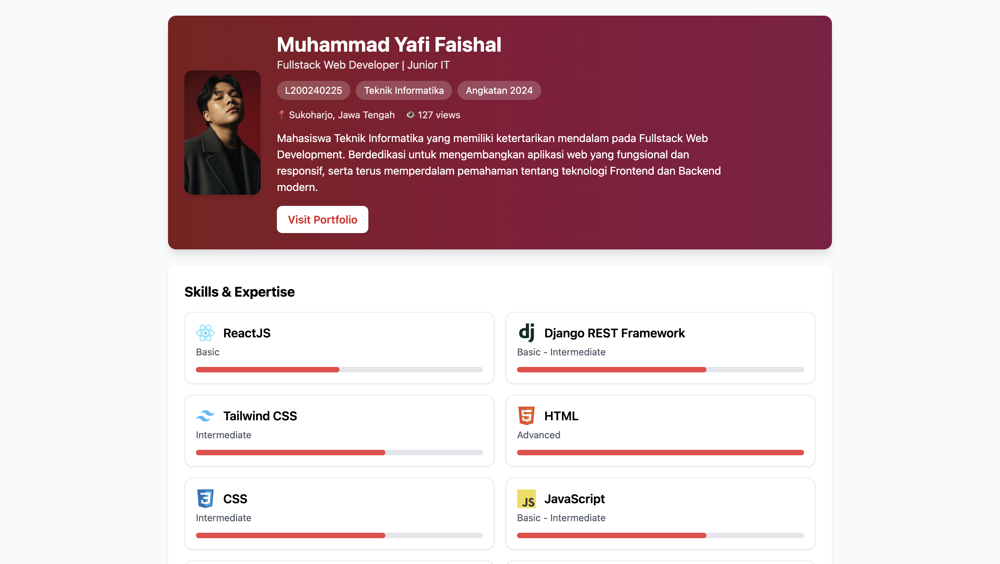
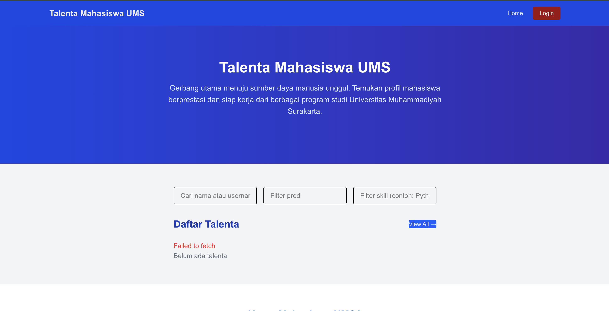
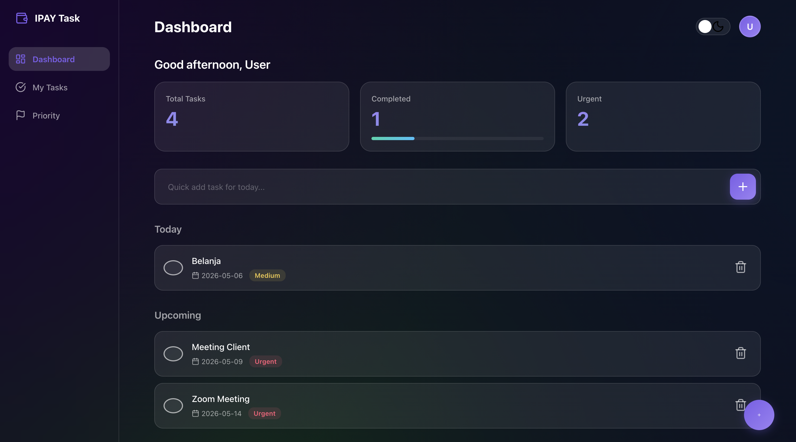
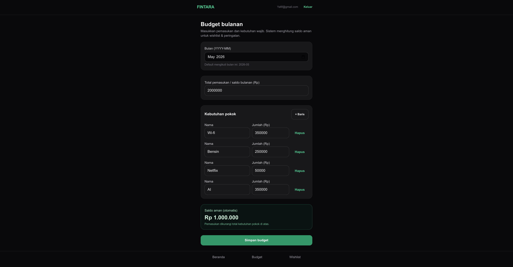
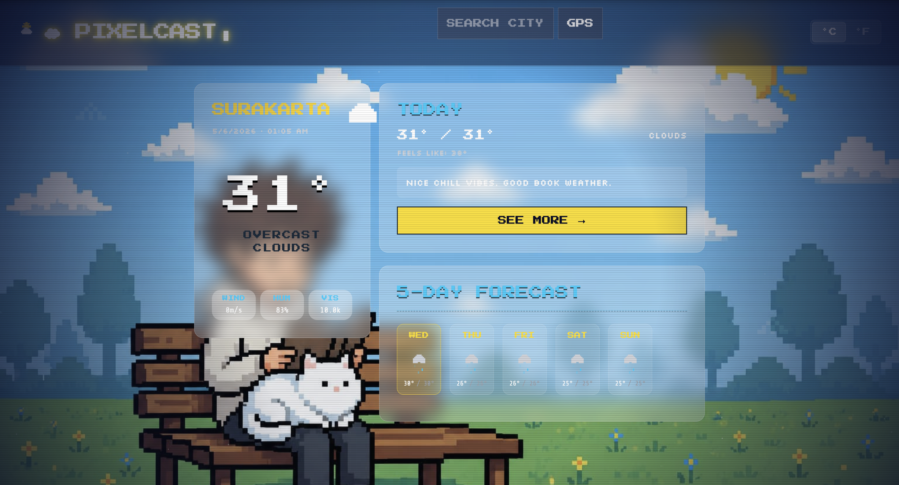

CV Portfolio — SPA
A single-page application CV portfolio built with React, presenting personal information, skills, and experience in a clean, interactive layout deployed on Vercel.
My Work
A curated selection of projects I've built — from academic assignments to personal explorations in web development and design.
Featured Projects

A single-page application CV portfolio built with React, presenting personal information, skills, and experience in a clean, interactive layout deployed on Vercel.

A web platform developed for Universitas Muhammadiyah Surakarta to support student talent development and academic opportunity discovery.

A clean and intuitive to-do application to manage daily tasks efficiently. Built and deployed on Vercel with a focus on simplicity and usability.

Financial Tracker & Awareness — A web application to help Gen Z Indonesia avoid impulsive buying with a monthly budget tracker and a psychology-based cooling-off period timer.

A weather application that provides real-time forecasts and detailed weather information using API integration.
Background